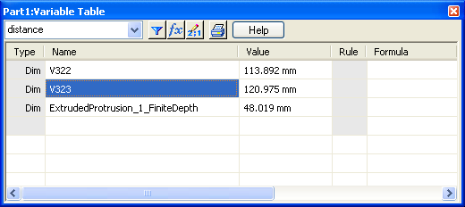
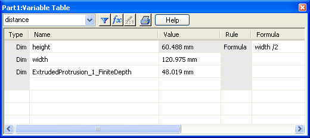

The variable system allows you to define relationships between variables and dimensions using equations, external functions, and spreadsheets. For example, you can construct a rectangular profile using four lines, and place two dimensions to control the height and width. The following illustration shows the Variable Table with these two dimensions displayed. (Every dimension is automatically available as a variable.)

Using these variables, you can make the height a function of the width by entering a formula. For example, you could specify that the height is always one-half of the width. Once you have defined this formula, the height is automatically updated when the width changes.
All variables have names; it is through these names that you can reference them. In the preceding illustration, the names automatically assigned by the system are V108 and V109. You can rename these dimensions; in the following illustration, V322 has been renamed to "height," and V323 has been renamed to "width."

Every variable has a value. This can be a static value or the result of a formula. Along with the value, a unit type is also stored for each variable. The unit type specifies what type of measurement unit the value represents. In this example, both of the variables use distance units. You can create Variables for other unit types such as area and angle. Values are displayed using this unit type and the unit readout settings.